Drupal 8 Media Status

Ok FIRST we have
to talk about
Drupal 7
What is in Drupal 7?
File fields
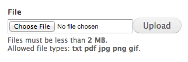
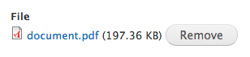
What is in Drupal 7?
Image fields
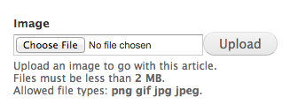
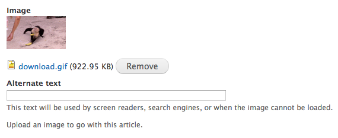
Drupal 7 limitations
File interactions limited to fields
Unused files deleted after 6 hours
Cannot reuse files
Cannot add fields to files
File Entity
drupal.org/project/file_entity
File listing page
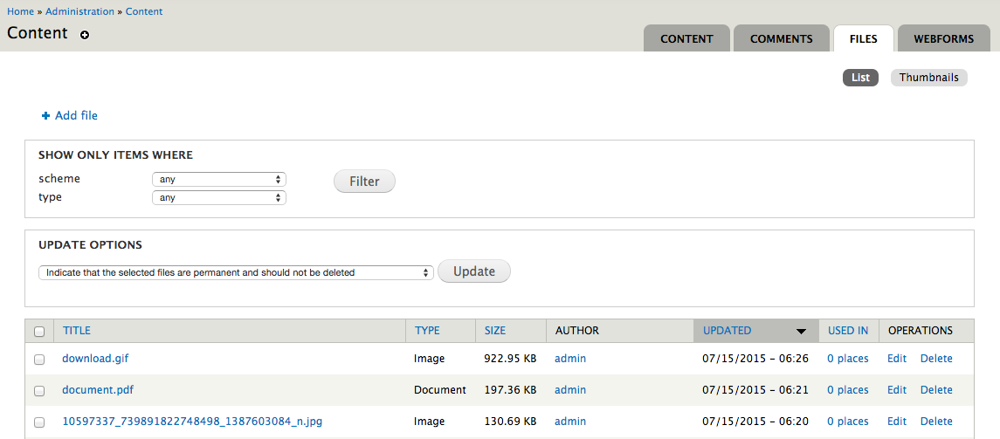File Entity
Adding files (and archives of files)
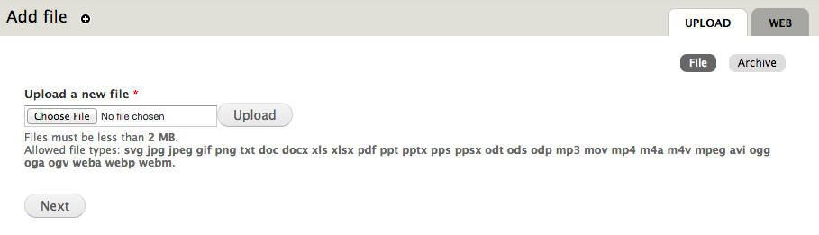File Entity
Managing files independently
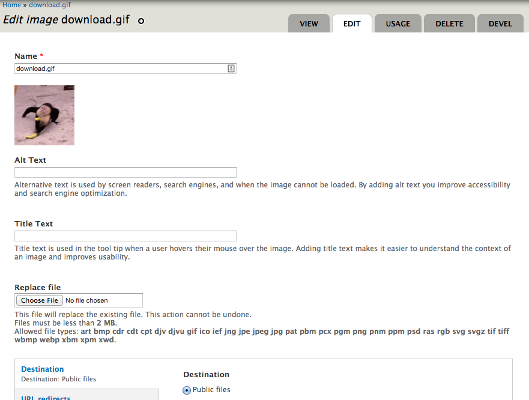File Entity
File types

File Entity
Managing fields on files
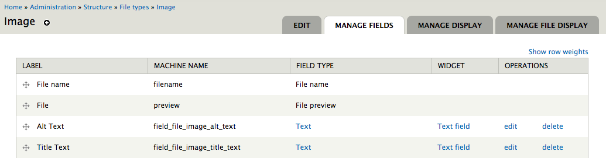File Entity
Managing file display
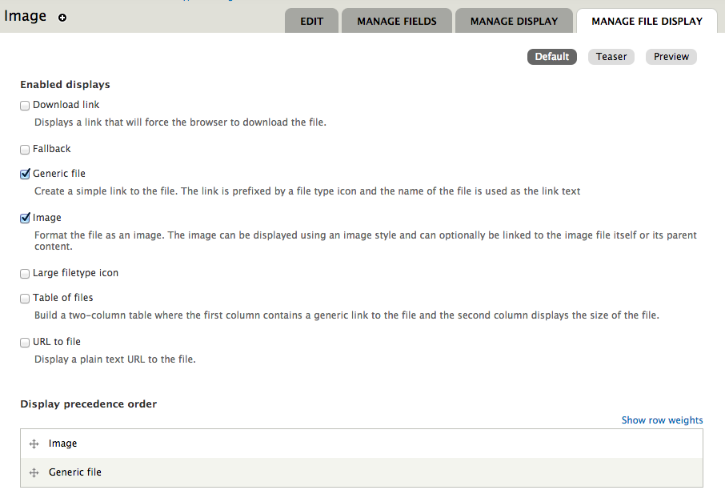File Entity
Simple HTML5 field formatters for audio and video files
Download link formatter
File Lock
This module allows you to "lock" files so they cannot be deleted.
Media
Media Browser widget for file and image fields
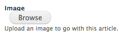Media
Media Browser Upload
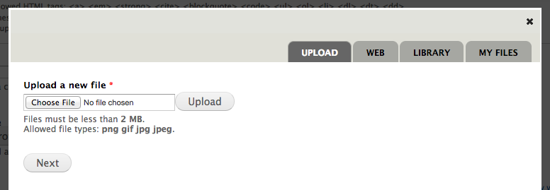Media
Media Browser Views integration
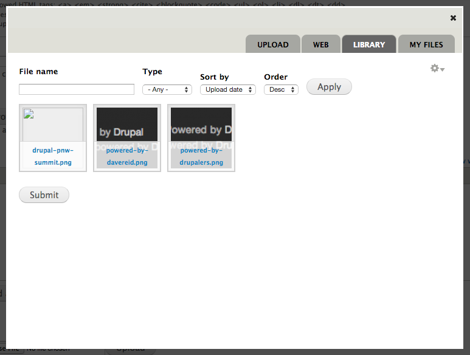Media
Media Browser Web
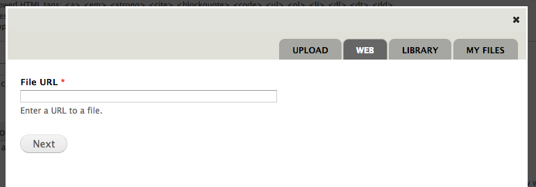Media oEmbed
Media CKEditor
Scald
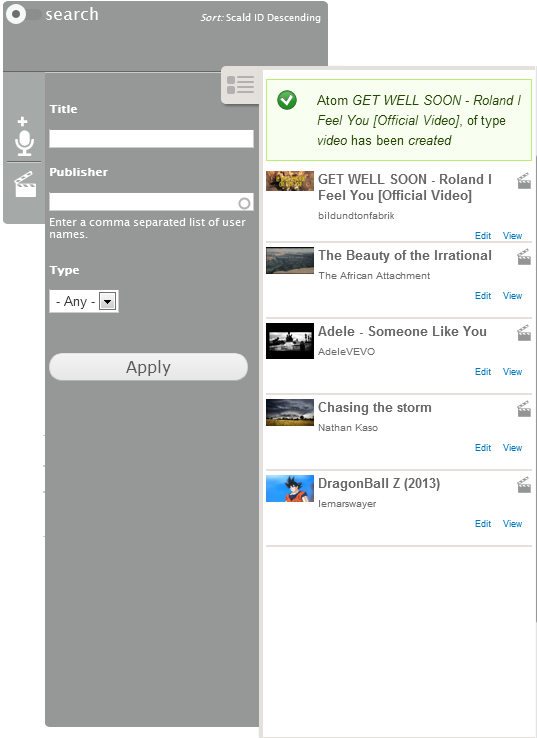Ok NOW we
can talk about
Drupal 8!
Whew
What is in Drupal 8?
CKEditor + Basic image upload
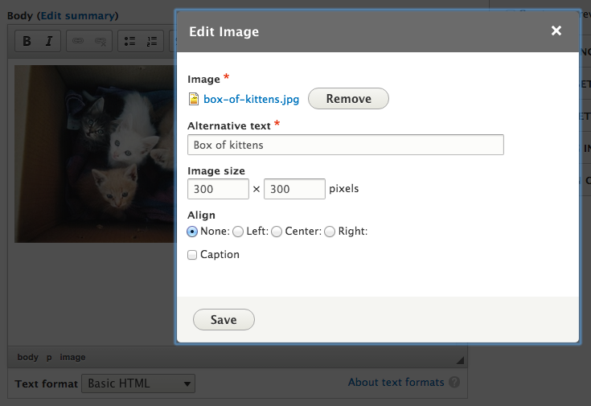What is in Drupal 8?
Basic file listing page
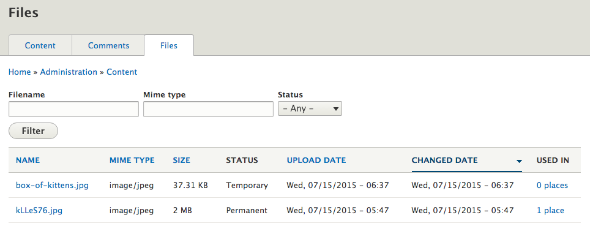What is in Drupal 8?
Basic file usage page
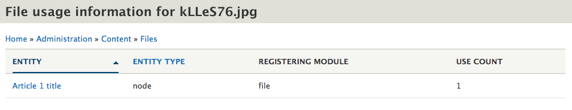What is in Drupal 8?
Configurable file cleanup
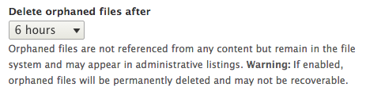Drupal 8 limitations
File interactions still limited to fields
Unused files deleted after 6 hours
Only basic WYSIWYG embedding support for images
Cannot reuse files
Cannot add fields to files
NYC Camp 2014: Plan is hatched
 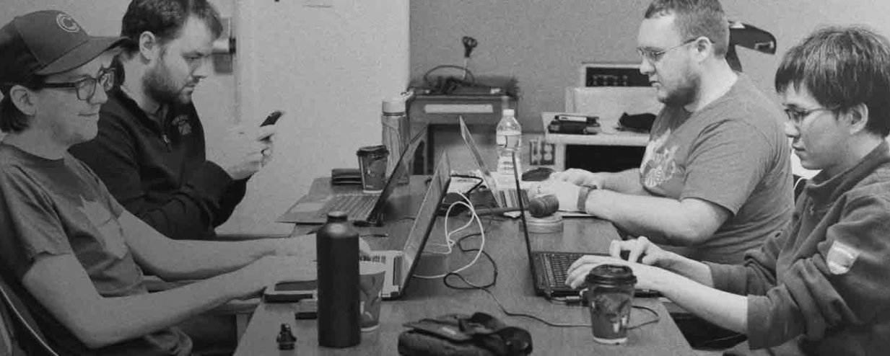
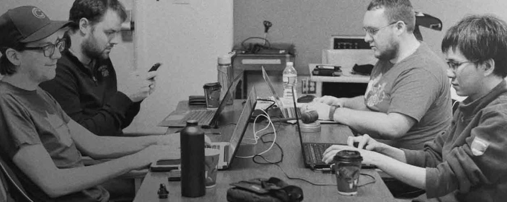
The Media Plan:
Embedding / WYSWIYG
Browsing and selection
Storage
Goals:
Independent, reusable, and pluggable
Collaborative architecture
Collaborative resources
Momentum
Communication
Entity Embed
Status: Usable
drupal.org/project/entity_embed
Completed:
- Backported to Drupal 7
- Improved UX of display configuration
Remaining:
- Integrate selection with Entity Browser
- Usability polish
- Abstract to extend Entity API
Embed API
Status: In Progress
Abstraction of reusable embedding concepts from Entity Embed.
URL Embed
Status: In Progress / GSOC 2015
Allows embedding of URLs using the WYSIWYG or link fields.
Using the Embed library from github.com/oscarotero/Embed
supports much more than just oEmbed
Transform pasted embeddable URLs and embed codes in WYSIWYG to normalized HTML tag.
Shortcode Embed
Status: In Planning
Custom "macros" to convert shortcodes to rendered HTML.
My callout text Entity Browser
Status: In Progress / Usable-ish
drupal.org/project/entity_browser
Completed:
- Architecture and API
- Integration with Inline Entity Form
Remaining:
- UI for browser config entities
- Views integration for selection
File Entity
Status: In Planning / Usable-ish
drupal.org/project/file_entity
Extends core's file entity type with fieldability and add/edit/delete forms.
Need to regroup on module scope.
Unofficial port: github.com/md-systems/file_entity
Media
Status: In Planning
Becomes a "glue" module that brings all the components together.
Based on File Entity + Entity Browser config + Entity Embed button
Media Entity
Status: Usable
drupal.org/project/media_entity
Completed:
- Basic editorial UI
- Lots of provider integrations already written: YouTube, Grab networks, AOL, Twitter, Instagram, local files
Remaining:
- Rendering
Media Pinkeye
Status: Usable
drupal.org/project/media_pinkeye
First module bringing everything together to work out of the box
Based on Media Entity + Entity Browser config
Crop API
Status: In Progress
https://www.drupal.org/project/crop
Provides basic API for image cropping. This module won't do much by itself. Users should pick one of UI modules that utilize this API.
Completed:
- Basic API and cropping entity definitions
- Integrations with file and media entities
Remaining:
- UI (left for integrating modules?)
Fallback Formatter
Status: Usable
drupal.org/project/fallback_formatter
Provides a field formatter that can attempt multiple formatters and the first one that returns output for each value wins.
Recycled Formatters
Status: In Planning
github.com/drupal-media/recycled_formatters
drupal.org/project/file_image_formatters
Allow formatters to be shared between image, file, and entity_reference fields.
File Download
Status: In Planning
URL for direct downloads of file entities, logging downloads, etc.
Struggles
Communication
Momentum
Funding
Contribute!
Contributors

Resources
- drupalmedia.org
- Weekly scrum meetings on #drupal-media IRC
- github.com/drupal-media
- groups.drupal.org/media
- @davereid - drupal.org/u/dave-reid
- @slashrsm - drupal.org/u/slashrsm
Drupal 8 Media Guide
drupal-media.gitbooks.io/drupal8-guide
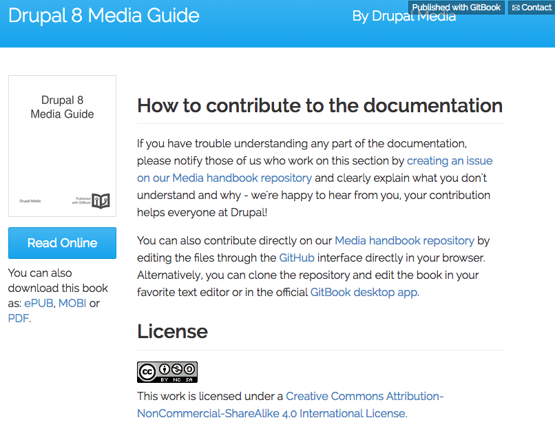